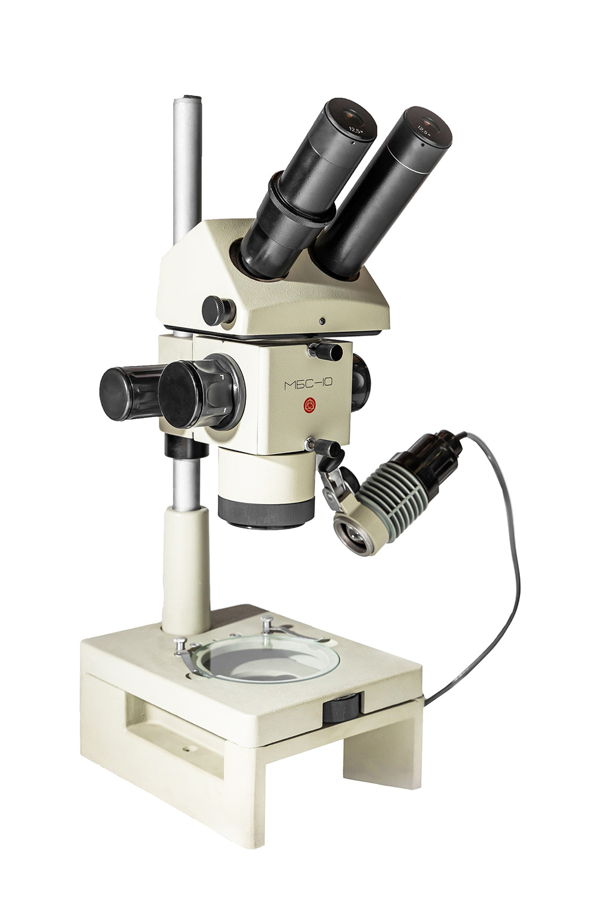
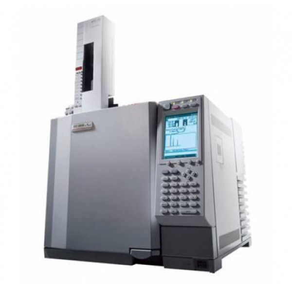
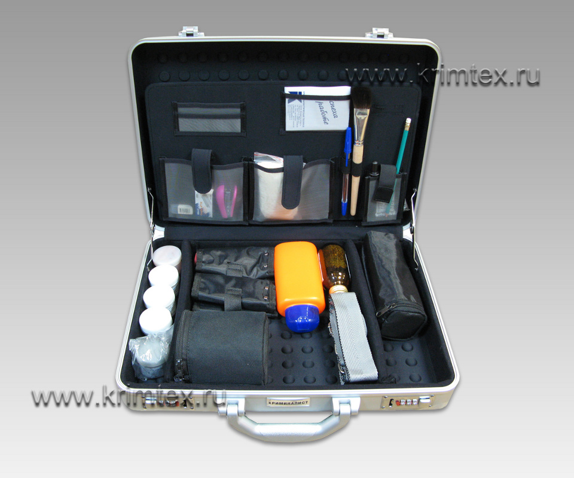

Приборы

Микроскоп криминалистический (например, МБС-10)
Криминалистический микроскоп — это оптический прибор, работающий на основе законов геометрической оптики. Он использует систему линз для увеличения изображения микроскопических объектов за счёт преломления света. Основные физические явления: преломление света, фокусировка, увеличение, глубина резкости.
В работе правоохранительных органов микроскоп применяется для анализа следов на вещественных доказательствах — волокон ткани, частиц грунта, микроскопических царапин на оружии. Позволяет выявлять детали, невидимые невооружённым глазом, что критично при расследовании преступлений. Благодаря стереоскопическому эффекту (два окуляра с разным углом обзора) можно оценивать рельеф объектов в 3D.
В работе правоохранительных органов микроскоп применяется для анализа следов на вещественных доказательствах — волокон ткани, частиц грунта, микроскопических царапин на оружии. Позволяет выявлять детали, невидимые невооружённым глазом, что критично при расследовании преступлений. Благодаря стереоскопическому эффекту (два окуляра с разным углом обзора) можно оценивать рельеф объектов в 3D.

Ультрафиолетовая лампа
Ультрафиолетовая (УФ) лампа — это источник электромагнитного излучения с длиной волны от 10 до 400 нанометров, находящейся за пределами видимого спектра. Физически она работает за счёт разрядов в газе (например, ртути), при которых испускаются фотоны УФ-диапазона.
При облучении материалов УФ-светом происходит эффект флуоресценции — физическое явление, при котором определённые вещества поглощают ультрафиолетовое излучение и испускают свет в видимом диапазоне. Это позволяет обнаруживать скрытые детали, такие как следы биологических жидкостей, отпечатки пальцев, защитные метки на документах и банкнотах.
В практике криминалистов ультрафиолетовая лампа используется для выявления невидимых следов на одежде, мебели, в салоне автомобиля. Это один из ключевых инструментов при осмотре места преступления, поскольку позволяет обнаружить улики без разрушения или загрязнения объектов.
При облучении материалов УФ-светом происходит эффект флуоресценции — физическое явление, при котором определённые вещества поглощают ультрафиолетовое излучение и испускают свет в видимом диапазоне. Это позволяет обнаруживать скрытые детали, такие как следы биологических жидкостей, отпечатки пальцев, защитные метки на документах и банкнотах.
В практике криминалистов ультрафиолетовая лампа используется для выявления невидимых следов на одежде, мебели, в салоне автомобиля. Это один из ключевых инструментов при осмотре места преступления, поскольку позволяет обнаружить улики без разрушения или загрязнения объектов.

Инфракрасный спектрометр (ИК-спектрометр)
Инфракрасный спектрометр — это прибор, основанный на законах квантовой физики и спектроскопии. Он измеряет поглощение инфракрасного (ИК) излучения веществом в диапазоне волн от 0,7 до 1000 мкм. Молекулы вещества, взаимодействуя с ИК-излучением, переходят в возбуждённое вибрационное состояние. Каждое вещество имеет уникальный спектр поглощения, зависящий от его молекулярной структуры.
Физические принципы:
В криминалистике ИК-спектрометр используется для анализа состава веществ — например, при идентификации наркотиков, взрывчатых веществ, лаков, красок, волокон. Это незаменимый инструмент в лабораторной судебной экспертизе: без разрушения пробы можно определить химическую формулу вещества, что позволяет установить его происхождение и возможную связь с преступлением.
Физические принципы:
- Поглощение ИК-фотонов — переход между колебательными уровнями энергии молекул
- Дисперсия света при помощи решёток или интерферометров
- Принцип интерференции и преобразование Фурье (в ИК-Фурье-спектрометрах)
В криминалистике ИК-спектрометр используется для анализа состава веществ — например, при идентификации наркотиков, взрывчатых веществ, лаков, красок, волокон. Это незаменимый инструмент в лабораторной судебной экспертизе: без разрушения пробы можно определить химическую формулу вещества, что позволяет установить его происхождение и возможную связь с преступлением.

Газовый хроматограф
Газовый хроматограф — аналитический прибор, основанный на физико-химических процессах разделения смесей веществ. Принцип работы опирается на дифференциальное распределение компонентов смеси между неподвижной фазой (колонкой) и подвижной фазой (газ-носитель). Каждый компонент движется с разной скоростью, что позволяет эффективно разделять и анализировать сложные смеси.
Физические явления:
В правоохранительной практике газовый хроматограф незаменим для анализа веществ, таких как наркотики, химические препараты, токсичные соединения и следы взрывчатых веществ. Он позволяет с высокой точностью определить состав и концентрацию компонентов, что критично для судебных экспертиз и раскрытия преступлений.
Физические явления:
- Адсорбция и десорбция молекул на поверхности неподвижной фазы
- Молекулярная диффузия и конвекция в газовой среде
- Термодинамическое равновесие между фазами
- Детектирование компонентов с помощью теплового, ионизационного или масс-спектрометрического сенсора
В правоохранительной практике газовый хроматограф незаменим для анализа веществ, таких как наркотики, химические препараты, токсичные соединения и следы взрывчатых веществ. Он позволяет с высокой точностью определить состав и концентрацию компонентов, что критично для судебных экспертиз и раскрытия преступлений.

Дактилоскопический набор
Дактилоскопический набор — это комплекс приборов и химических реагентов для выявления и фиксации отпечатков пальцев. Основной физический принцип основан на взаимодействии вещества с кожным потом и жировыми выделениями, оставленными на поверхности, и последующей визуализации контуров узоров кожи.
Физика процесса включает:
В работе правоохранительных органов дактилоскопический набор позволяет фиксировать уникальные отпечатки, которые являются ключевыми доказательствами при идентификации личности подозреваемых и свидетелей. Точное воспроизведение рисунка повышает надёжность судебных экспертиз.
Физика процесса включает:
- Адсорбцию и капиллярные эффекты при нанесении порошков или химикатов на рельефные поверхности;
- Оптические свойства материалов, используемых для улучшения контраста отпечатков;
- Принцип флуоресценции при использовании ультрафиолетовых и инфракрасных ламп для обнаружения невидимых невооружённым глазом следов.
В работе правоохранительных органов дактилоскопический набор позволяет фиксировать уникальные отпечатки, которые являются ключевыми доказательствами при идентификации личности подозреваемых и свидетелей. Точное воспроизведение рисунка повышает надёжность судебных экспертиз.

Фотокамера с макрообъективом
Фотокамера с макрообъективом предназначена для съёмки объектов с очень близкого расстояния, обеспечивая высокое разрешение и детализированное изображение мелких объектов. Физика работы объектива базируется на преломлении света через систему линз, создавая увеличенное и чёткое изображение.
Основные физические принципы:
В криминалистике фотокамера с макрообъективом используется для фиксации мельчайших деталей улик — следов на оружии, тканевых волокон, царапин, пятен, отпечатков пальцев. Высокое качество изображений помогает эксперту анализировать вещественные доказательства без повреждений.
Основные физические принципы:
- Геометрическая оптика — фокусировка световых лучей для получения резкого изображения;
- Глубина резкости — узкий диапазон расстояний, в котором объекты остаются чёткими;
- Диффракция света — ограничение разрешающей способности объектива;
- Контраст и светочувствительность матрицы камеры.
В криминалистике фотокамера с макрообъективом используется для фиксации мельчайших деталей улик — следов на оружии, тканевых волокон, царапин, пятен, отпечатков пальцев. Высокое качество изображений помогает эксперту анализировать вещественные доказательства без повреждений.
Связанные ссылки

МГТУ им. Г.И. Носова
Многопрофильный колледж

Сайт МГТУ им. Г.И. Носова

Телеграм-канал МГТУ